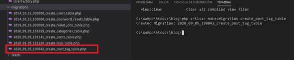
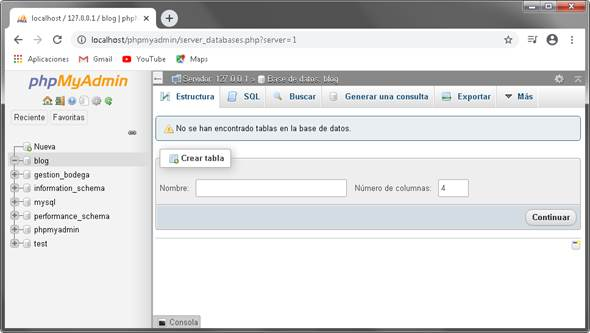
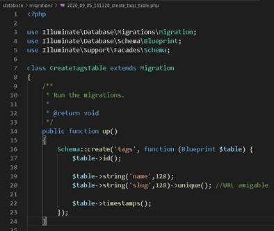
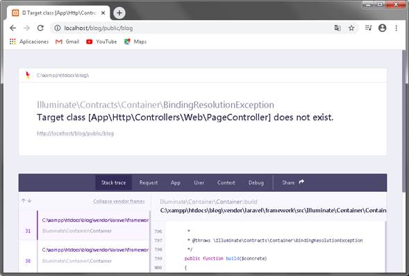
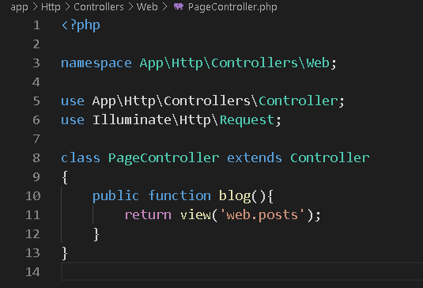
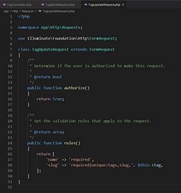
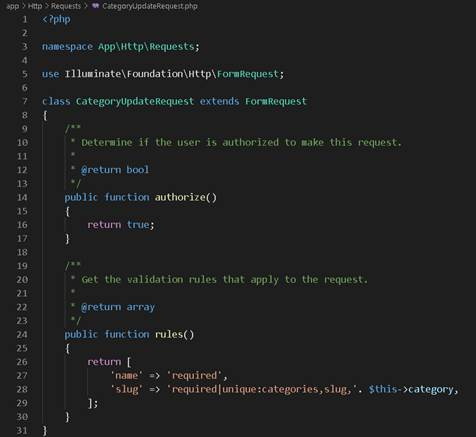
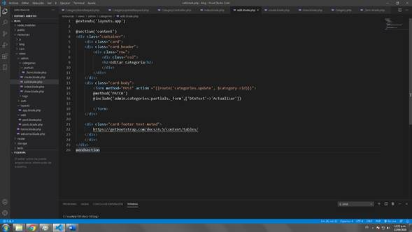

Contenido
- 3 - Configurar base de datos, slug y migraciones
- 4 - Relacionando tablas y continuando migraciones
- 5 - Factory, Seeder, Faker
- 6 - Listado de POST - Paginate, AUTH
- 7 - Detalle de un POST
- 8 - ORM Eloquent (Consulta de POST por Categoría y Etiquetas)
- 9 - Estructura de Panel administrativo
- 10 - AUTH y TagController (index, show, create, store, edit, update y destroy)
- 11 - Validar campos obligatorios y únicos en Laravel (make:request)
- 12 - Vista Index (ver, editar, eliminar y crear)
- 13 - Eliminar etiquetas
- 14 - Vistas de create, edit, show para el módulo tags
- 15 - Javascript en algunas vistas blade
- 16 - Módulo categorías (CRUD)
- 17 - Módulo de Entradas (CRUD de POSTS)
Creando un Blog Usando Laravel 7
Por ElBarto Lomeo
Fecha de inicio: Septiembre 7, 2020
Fecha final: Ni idea.
La información presente es este sitio tiene como fin de documentar mi primera practica usando Laravel, no soy un programador, tampoco estudio maquetación web y esto no es una guía para crear un blog, solo recopilo los pasos que he hecho y adjunto documentación que he encontrado en otros sitios.
Este pequeño blog está creado en base a los videotutoriales del curso Blog en LARAVEL 5.5 del canal de YouTube Rimorsoft Online, también puse en práctica cosas que vi en el curso Aprende Laravel desde cero (2019) del canal de YouTube Aprendible y el manejo de Bootstrap gracias a una gran cantidad de videos del canal de YouTube Fazt, también me han ayudado mucho personas dentro del servidor de discord de FaztTech al momento de responder mis dudas.
Programas Instalados
Se escribe en composer: create-project --prefer-dist laravel/laravel blog

Creando modelos para categorías, post y etiquetas
php artisan make:model Category -m
model Post -m
php artisan make:model Tag -m
Creación modelo para relación muchos a muchos
php artisan make:migration create_post_tag_tablet (Tener presente ordenarlo alfabéticamente)

3. Configurar base de datos, slug y migraciones


php artisan migrate
php artisan migrate:refresh
4 - Relacionando tablas y continuando migraciones
/* Storage database and tables */
$cfg['Servers'][$i]['pmadb'] = 'phpmyadmin';
$cfg['Servers'][$i]['bookmarktable'] = 'pma__bookmark';
$cfg['Servers'][$i]['relation'] = 'pma__relation';
$cfg['Servers'][$i]['table_info'] = 'pma__table_info';
$cfg['Servers'][$i]['table_coords'] = 'pma__table_coords';
$cfg['Servers'][$i]['pdf_pages'] = 'pma__pdf_pages';
$cfg['Servers'][$i]['column_info'] = 'pma__column_info';
$cfg['Servers'][$i]['history'] = 'pma__history';
$cfg['Servers'][$i]['table_uiprefs'] = 'pma__table_uiprefs';
$cfg['Servers'][$i]['tracking'] = 'pma__tracking';
$cfg['Servers'][$i]['designer_coords'] = 'pma__designer_coords';
$cfg['Servers'][$i]['userconfig'] = 'pma__userconfig';
$cfg['Servers'][$i]['recent'] = 'pma__recent';

5 - Factory, Seeder, Faker
Creando información falsa
Los Factory van con nombre singular, representa la estructura de una tabla
php artisan make:factory CategoryFactory
php artisan make:factory PostFactory
php artisan make:factory TagFactory
Los Seeds van con nombre en plural, ayuda a llenar con información falsa-
php artisan make:seeder CategoriesTableSeeder
php artisan make:seeder PostsTableSeeder
php artisan make:seeder TagsTableSeeder
php artisan make:seeder UsersTableSeeder
php artisan migrate:refresh --seed
Se termina los métodos y relaciones faltantes.
6 - Listado de POST - Paginate, AUTH
Crear el sistema de login
https://laravel.com/docs/7.x/authentication

composer require laravel/ui
php artisan ui vue --auth
npm i
npm run dev

php artisan make:controller Web/PageController


https://getbootstrap.com/docs/4.5/getting-started/introduction/
https://getbootstrap.com/docs/4.5/components/card/
7 - Detalle de un POST

8- ORM Eloquent (Consulta de POST por Categoría y Etiquetas)
9 - Estructura de Panel administrativo
10 - AUTH y TagController (index, show, create, store, edit, update y destroy)
Configurando el controlador y colocando seguridad para que solicite inicio se sesión

11 - Validar campos obligatorios y únicos en Laravel (make:request)
Se crean dos validaciones colocando en el nombre tag que es el módulo, store el método y request como clase para recordar que tiene que ver con las validaciones.

php artisan route:list
12 - Vista Index (ver, editar, eliminar y crear)
13 - Eliminar etiquetas
https://laravelcollective.com/ NO INSTALAR
$ composer require laravelcollective/html
NO INSTALAR
composer remove laravelcollective/html
font-family:https://getbootstrap.com/docs/4.5/components/alerts/
14 - Vistas de create, edit, show para el módulo tags
15 - Javascript en algunas vistas blade

16 - Módulo categorías (CRUD)



17 - Módulo de Entradas (CRUD de POSTS)